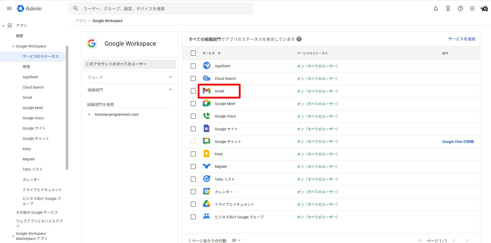

Google Workspace ご紹介ページ
このリンクから申し込みをしてください。

Google Workspace の申し込み手順
- Google Workspace の無料試用へのお申し込み ページにアクセスします。
-
ビジネス情報を入力します。
- 会社名（組織名）
- 従業員数
- 国/地域（日本）
-
管理者情報を入力します。
- 氏名
- 現在のメールアドレス（連絡先）
-
ドメインを選択します。
- 既存ドメインを使う場合: ドメイン名を入力
- 新規ドメインを購入する場合: 希望ドメイン名で購入手続き
- 管理者のユーザー名とパスワードを設定します。
- 利用規約を確認し、同意します。
- （既存ドメインの場合）ドメイン所有権の確認を行います。
- 必要に応じてユーザーを追加します。
- 支払い情報を入力します（無料試用後の継続利用に備えて設定）。
既存メールサーバーを維持したまま Gmail を利用する設定
同一ドメインで Google Workspace をまだ使っていない既存メールアドレスを、メールサーバーを変更せずに利用するための設定です。
- Google 管理コンソール に管理者でアクセスし、一覧から Gmail をクリックします。 
-
ホスト タブを開き、既存で使っているメールサーバーのホストを登録します。
- ホスト名: 例）
mail.example.com - ポート番号: 通常は
25 - オプション: 「ホストで MX ルックアップを実行する」 のチェックが外れていることを確認
- ホスト名: 例）
-
デフォルトのルーティング タブを開き、ルーティングを追加 をクリックします。
- 照合するエンベロープ受信者: すべての受信者
- ルート: ルートを変更 にチェックし、先ほど作成したホストを選択
- オプション: 認識されていないアドレスに対してのみこの操作を実施する が選択されている
- 設定を 保存 します（反映には時間がかかる場合があります）。

※ 設定を誤るとメール受信に影響する可能性があります。詳細は Google Workspace 管理者ヘルプ を参照してください。
社内の一部のみで段階導入（スプリット配信）
既に自社のメールサーバーを利用中で、まずは一部ユーザー（試験導入メンバー）のみ Gmail を使いたい場合の代表的な方法です。
ドメインの MX を Google に向け、「認識されていないアドレスは既存サーバーへ転送」するルールを設定することで、Google アカウントを作成したメンバーだけが Gmail で受信し、それ以外は従来サーバーで受信を継続できます（= スプリット配信）。
- 対象ユーザーだけ Google アカウントを作成
試験導入メンバーのみユーザーを作成（推奨: 導入用の組織部門を用意）。 - 既存サーバーのホストを登録
本ページの「既存メールサーバーを維持…」の手順で ホスト を作成。 - デフォルトのルーティングでスプリット配信
「ルートを変更」を有効にし、認識されていないアドレスに対してのみこの操作を実施 を選択。未作成ユーザー宛メールは既存サーバーへ、作成済ユーザー宛は Gmail で受信。 - （任意）二重配信（デュアルデリバリ）
テスト期間中はパイロットユーザー宛メールを Gmail と既存サーバーの両方に配信する運用も可能です（ルーティングの追加条件等で実現）。
前提・注意
スプリット配信は MX を Google に切替えたうえで、未登録宛先を既存サーバーへ転送する設計です。切替は業務影響があるため、実施時間帯や巻き戻し手順を事前に決めてください。
安全な進め方
まずは試験導入メンバーのみユーザー作成→受信・送信テスト→周辺（スマホ/Outlook）設定→ヘルプ周知の順で段階導入がおすすめです。
送信ドメイン対策
SPF/DKIM/DMARC の整備を推奨。特に SPF は Gmail・既存サーバー双方の送信元を許可するよう見直してください。
チェックリスト
・対象ユーザー一覧作成／権限確認
・MX 切替の実施計画と監視体制
・既存サーバーの受信ログ確認方法
・ヘルプデスク連絡窓口の周知
よくある質問
- 全員を Google に移行する必要がありますか？
いいえ。スプリット配信により、作成済ユーザーのみ Gmail、それ以外は従来サーバーで継続できます。 - 一部ユーザーのメールが届かない場合は？
宛先ユーザーが Google に作成済か、ルーティング条件（未認識アドレスのみ）が正しいか、既存サーバーの受信ログを確認してください。 - 元に戻せますか？
MX を旧設定へ戻せば従来の受信経路に復帰します。変更の反映には数分〜数時間の DNS 伝播が必要です。 - Outlook やスマホの設定は？
Gmail 導入ユーザーは 公式ヘルプ を参照し、Gmail アプリや IMAP 設定を行ってください。